Older Games
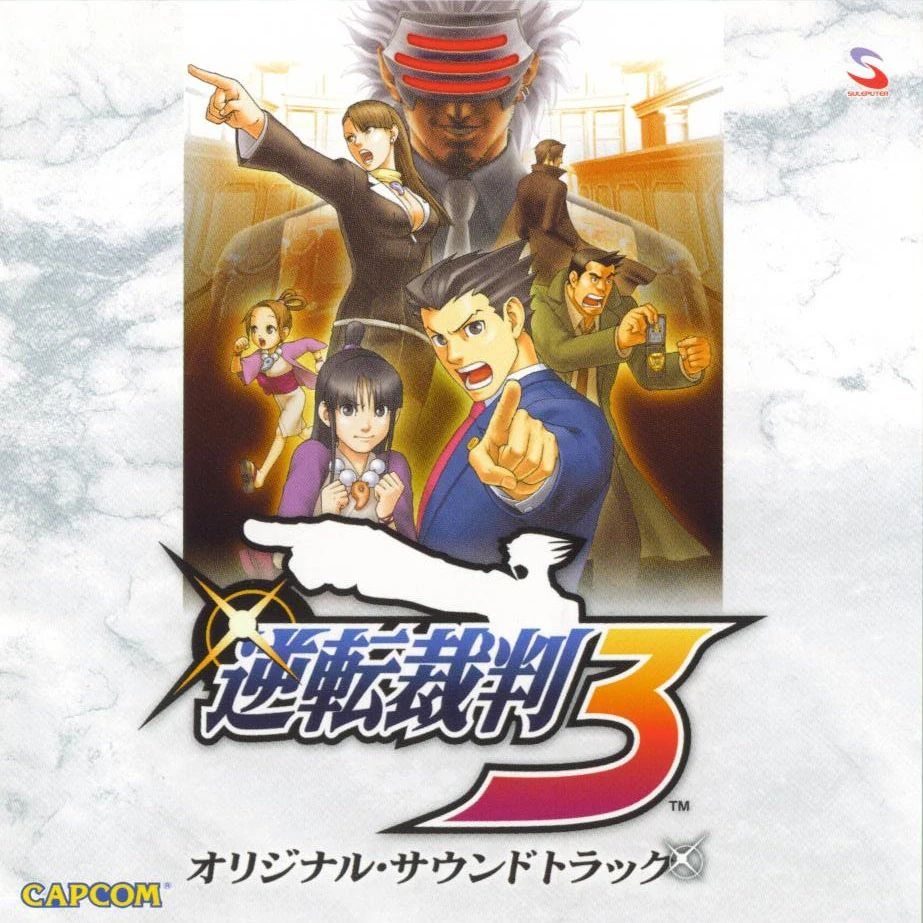
Ace Attorney
2019 maybe?
I'm a sucker for a well written mystery plot, and playing an Ace Attorney game is like getting a grab bag of 4 - 6 of them, of varying quality. I'm also a sucker for the way the music carries the intrigue of the mystery, and the excitement of finding a lead or pinning a culprit. I used to say my favorite game was Apollo Justice, but on watching a playthrough of it this year (2024), I decided that it's got a little too much underwear talk for my liking, and agreed with the general consesus that the Trials and Tribulations is the strongest entry in the mainline seires.
The Binding of Isaac: Rebirth
2017
Not going to lie, I originally picked this game up to impress a girl that I liked in Year 11 (15 years old). I distinctly remember describing it as 'that game with the religious stuff'.
...since then, I have put about 1000 hours into the Steam and Switch versions combined. It's my go to game to throw on when watching or listening to something else, since there's a lot of completion marks to get and you can kind of just chip away at it on your own pace.I wouldn't call it a masterpiece though.


Bloons TD 6
I've been playing bloons games for many years, since before BTD5 came out, and I feel like I owe it some loyalty, since it's one of the few popular games made in New Zealand other than, like, Dredge and Mini Metro. That said I don't think BTD6 is an incredible game. It's pretty good, to be sure, but it's weighed down a bit by microtransations, and could use a little more incentive to shake up gameplay variety. I shouldn't complain too much though, I'm not exactly the target audience for the silly monkey game.
The Legend of Zelda: Breath of the Wild
2017
I love this game. It's got just enough of just about everything I love in equal parts. Character Outfits, Open World with things to do, Puzzles you can create your own solution to, Movement that feels fun (sheild sliding my beloved), and a nice visual and audio style.Side Note: You have no idea how satisfying it was to watch many hours of lore videos about the zonai years before they were revealed to be a part of Tears of the Kingdom.
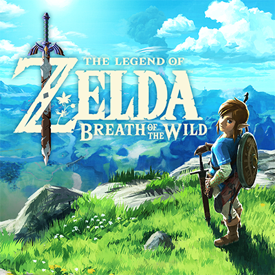
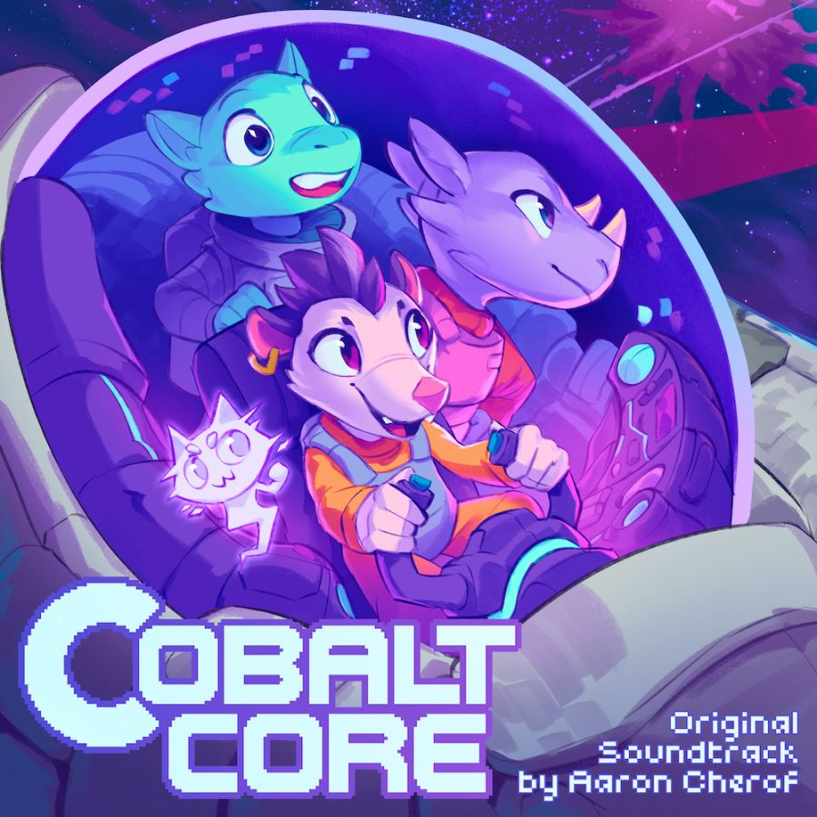
Cobalt Core
Nov 2023
Another rougelike on the list! How interesting! What sets cobalt core apart from the others is it's sweet characters and story, and it's stellar music. Seriously, I love the Cobalt Core soundtrack so much.
Deep Rock Galactic
Deep Rock is one of the best designed multiplayer games I've ever platyed. Every mission feels satisfying down to the tiniest of details, like how the guns sound to shoot, and how the bugs look when they explode into gooey chunks. Most fun you can have with three other people without being in the same room. I main Scout and Engineer btw. Moving fast and using shotguns are where it's at.
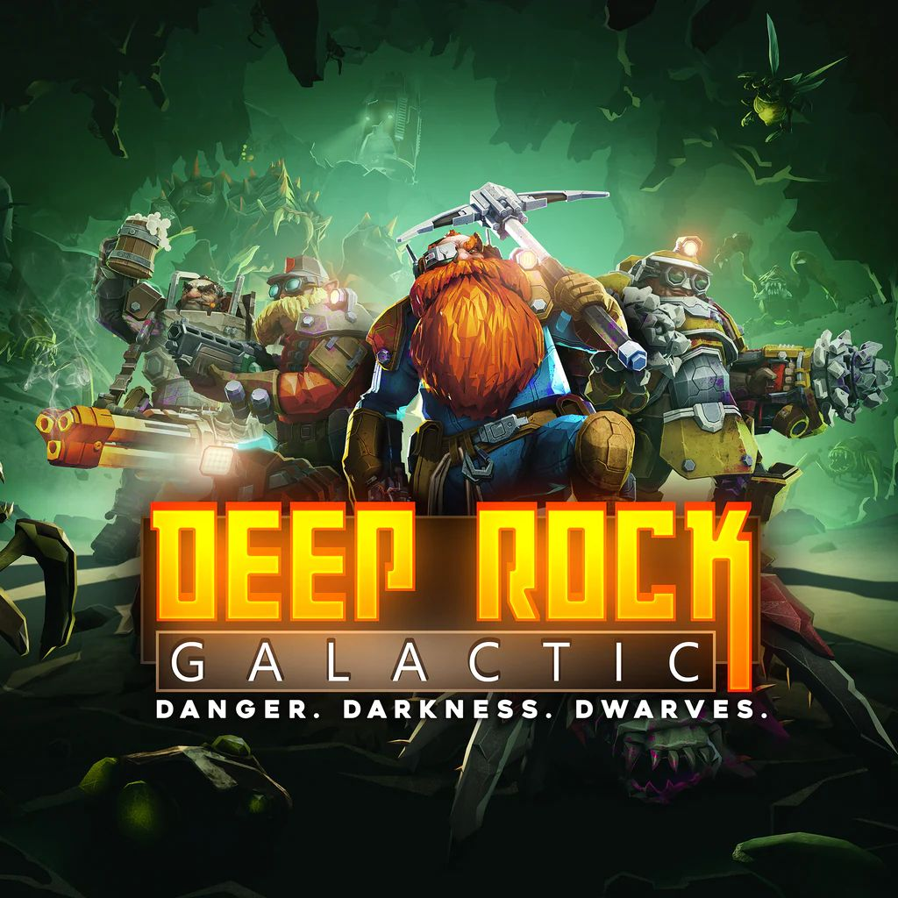

Deltarune
2018/2021
Deltarune chapter 3 deltarune chapter 4 give me now please free download online
Ghost Trick
Ghost Trick is one of the best games they ever made, and I can't even gush about it without being at risk of spoiling things. An amazing blend of interesting and unique puzzles, very well written and funny characters, and a surprisingly deep mystery with more twists and turns than a braided river. And it's essentially Shu Takumi writing fanfiction about his dog. 20/10.

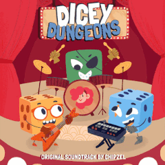
Rougelike Lightning Round
Dicey Dungeons, Hades, Monster Train and Inscryption
Figured I'd compile a few of my favorite rougelikes into a single entry, so they don't take up like half this list. They're all what I'd consider some of the best of the genre (or at least my favorites).
LittleBigPlanet
I love the LittleBigPlanet games. They were a sensory wonder to child me, with interesting new songs, extremely customizable characters and a level editor that I would never fully understand but was fun to mess around with nonetheless. Shoutout to the Angry Birds Bomb Survival level. Many hours were spent there.
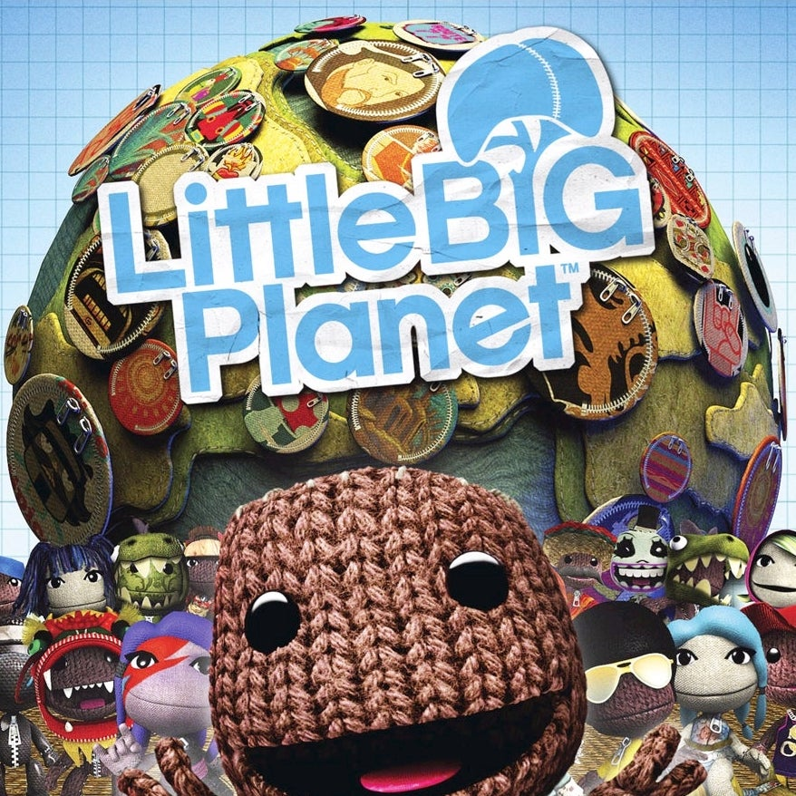

Minecraft
Since before 2013
I'd love to know the actual statistics on how long I've played Minecraft. In the more than 10 years, it's practically become second nature. There's not much about the game and it's mechanics that I couldn't tell you. I even dedicated an entire section of the website to it. Seems like the recent game direction is a little odd though, don't really know what the idea is behind the scenes.
No Straight Roads
This game is kind of.. all over the place? the game play feels kind of janky and inconsistent, the bosses are, for the most part, well designed visually but attack pattenrs can be unclear and hard to react to, and the story is a litle messy. But I love this game regardless. Everyone should love something that's so sucks. As a treat.

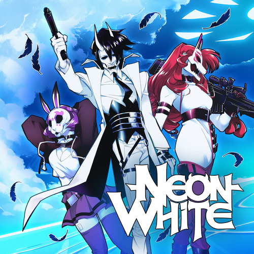
Neon White
January 2023
What a fantastic game. Some of the best and most fluid FPS movement I've ever seen, with mechanics that pushed me to go fast and retry levels multiple times without activating my very touchy tedium detector. The music definitley helps.
OneShot
July 2023
It took longer for me, a fan of weird metanarrative chicanery and cute cat things, than it should've to play OneShot. And I love it! Not to spoil anything, but it's themes and characters connected with me in a way that, for example, Undertale hadn't, which may be because I played it for myself first instead of seeinf someone else play first. My favorite part was when *spoiler* walks off the *spoiler*.
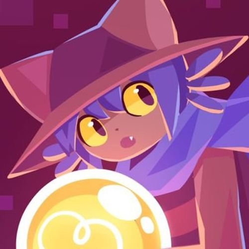
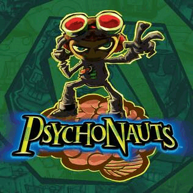
Psychonauts 1 & 2
2021
I had the great fortune of not being a fan of Psychonauts until 2021, the year it's sequel came out. Having beaten 1 and 100% completed 2, I have to say they're excelent (2 more so than 1). The environmental design is top notch, and really serves the backstories created for each character in fun ways. Additional shoutouts to the back half of 2 (everything until the final mind) for being awesome and the peak of both games IMO.
Slay the Spire
2018
I excluded this from my lightning round because it truly sits abouve the rest as quite possibly the best of it's genre (especially if you're confining just to deckbuilders). The amount of complexity that can be reached while still remaining relatively approachable is a marvel. I have 400 hours in it and that's not counting much much more time on my phone.

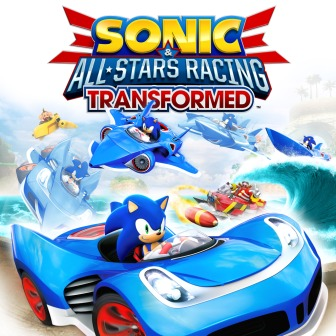
Sonic and All Stars Racing Transformed
Vibe shift to what I think might be the best (or just my favorite) kart racer ever. I'm not even that much of a Sonic fan (I've never beaten a Sonic game outside of the kart racers, nor any of the other represented franchises for that matter), but I love it nonetheless. Something about each car having a different plane and boat transformation tickles me, and the control shifts feel really cool to adjust to.
Team Fortress 2
2015
This game sucks. I know it to be true. It's just about old enough to legally drink, it was one of the earliest adopters of the paid loot box, it's free to play and easy to run (which when combined with being on steam and open text and voice chat means you're 100% certain to come across some of the most unsavoury characters the internet has to offer), and it hasn't been meaningfully updated in 7 years. Somehow I keep going back to it regardless, and every time I do, I don't enjoy myself. Something about dressing those old men up in outfits I guess. I have 800 hours in this game.
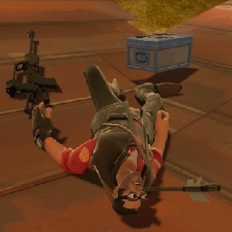

UNDERTALE
I think, by this point, I know 99% of the things it is posible for someone to know about Undertale, short of memorizing every individual line of dialouge. I've been to the fan wikis. I've seen the theories. I've seen the AUs. I've played the fangames. I've seen the Kissy Cuties'. Sets of numbers, Lines of dialouge, etcetera, etcetera.
Honourable Mentions
Super Mario Odyssey, Super Mario Wonder, Portal 1 and 2, Overwatch but when it was good (before OW2), Gmod, FTL: Faster Than Light, Create (Minecraft Mod), Sophisticated Backpacks & Sophistiated Storage (Minecraft Mods), Celeste you don't need me to tell you Celeste is a good game
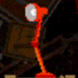
2024
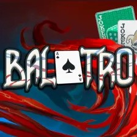
Balatro
Early 2024
I'm a sucker for a clean, well designed card rougelike and Balatro is that to a tee. Everything about it is perfectly tuned, with just enough detail put into just the right areas to make it shine. I am also a sucker for watching youtube videos of people playing well designed card rougelikes in an optimal way, and that exists in spades for this game, so it's a self perpetuating loop really.
Splatoon 3: Side Order
Mid 2024
I had the pleasure of rounding off my playthroughs of all of Splatoon's story modes without being spoiled on Side Order, and... It might be my favorite one? Or at least tied with Octo Expansion. I know it's a little divisive, I'd imagine some people are less fond of the rougelike gameplay, but I'm already a rougelike lover, so I enjoyed it. It has all the little neat touches that every Splatoon game has, and they finally added new enemies for what is pretty much the first time in the series (Not counting new Octo enemy variants). And it has Off the Hook in it, so.. A+ for that.
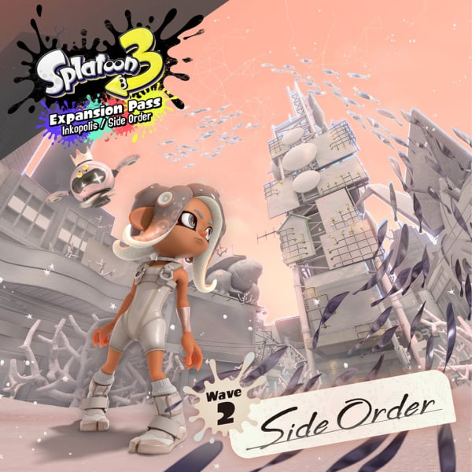
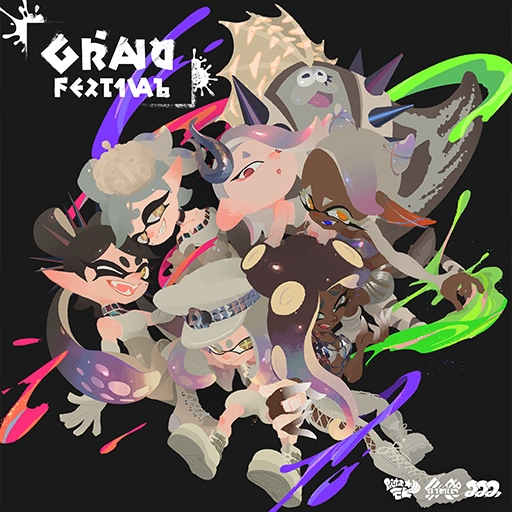
Splatoon 3: Grand Fest
September 2024
Following on from that... Grand Fest! I was never a regular Splatoon player (and I'm still not very good), but my love for the story and music carried me far enough to get me to at least try and get good. To fight for Team Present, may they rest in piece.
The whole event was also very cool to experience! The whole outdoor music festival theme was a great idea pulled off perfectly, and seeing all the little guys and hearing all the songs was super cool.
Bomb Rush Cyberfunk
July 2024
Jumping back a little in the year, I played Bomb Rush Cyberfunk! I've been a fan of the soundtrack almost since release, so it was great to play the game and see that it managed to match it's music.


Rhythm Doctor
April 2024
I had always assumed I wasn't very good at rhythm games, though this may be because my main data points were Geometry Dash (not a very good rhythm game) and Space Channel 5: Part 2 (Notoriously Buggy). That said, I had a great time with Rhythm Doctor. The music is great, the levels are extremely creative, and it has cool collab levels too! My favorite song has to be the Fire & Ice tutorial though.
UNBEATABLE [white label]
August 2024
Speaking of rhythm games with awesome soundtracks, UNBEATABLE! The fact that this game has collabs in Rhythm Doctor and No Straight Roads should've clued me in to the fact that this would be a great game, but I didn't think much of it until checking out the game for myself. Suffice to say, I love it, presentation is top notch, and the songs are even topper notch. (Proper Rhythm is my favorite). And this isn't even the full game!
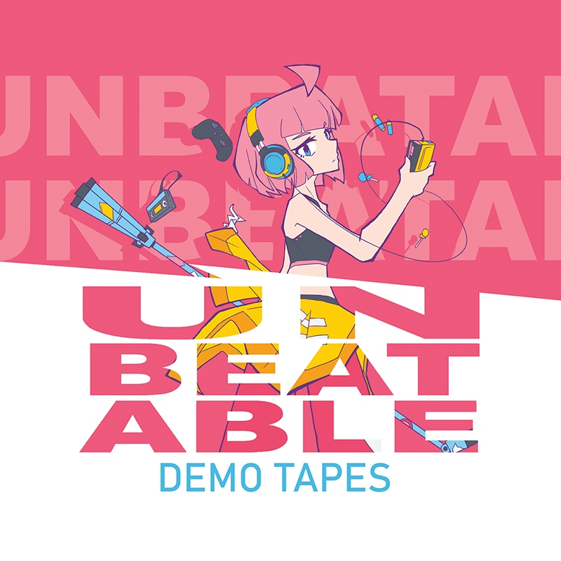
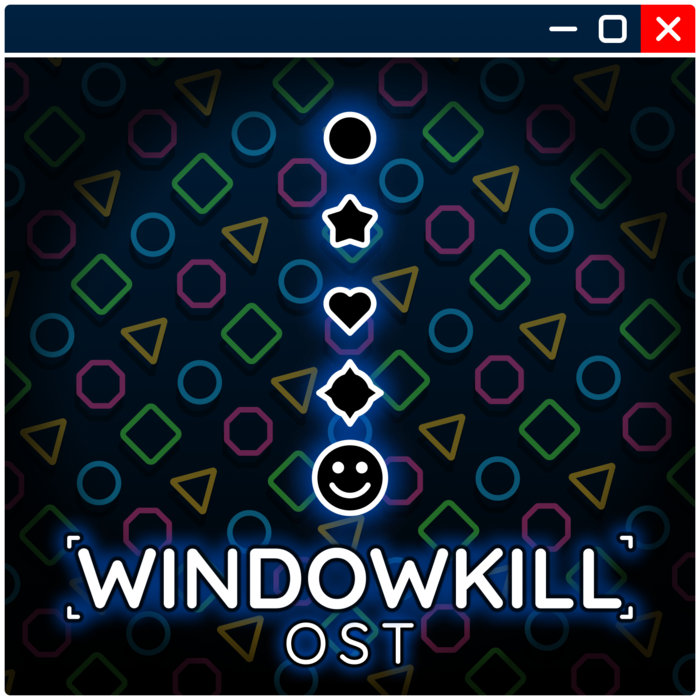
Windowkill
April 2024
Windowkill is kind of like the platonic ideal of a game for me. It's got a cool gimick that is very well utilized, the visual design is super clean, and the soundtrack is rad. And it's cheap! Buy it!
All Six Professor Layton Games
Like the whole year
This year, for the first time, I played through every Layton game from Curious Village to Azran Legacy. It was a ride. I am all for the wild and nonsense plot twists, and the puzzles were fun too! I can honestly say I had a great time playing them, and I'm super excited to play Professor Layton Vs Pheonix Wright (Ostensibly the reason I started playing the layton games in the first place), and New World of Steam! Unwound Future has to be my favorite of the series, since I think it pulls the end-of-game insane reveals off the best. In order from favorite to least, it probably goes: Unwound Future, Spectre's Call, Miracle Mask, Pandora's Box, Curious Village, Azran Legacy.
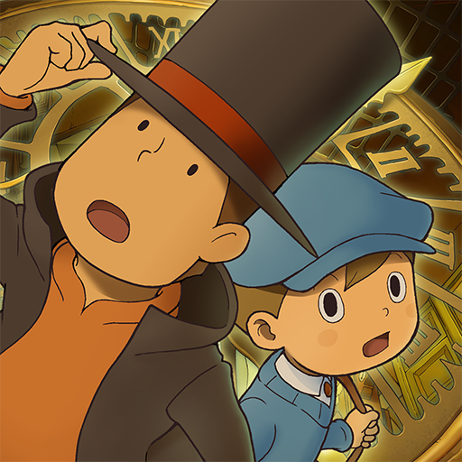
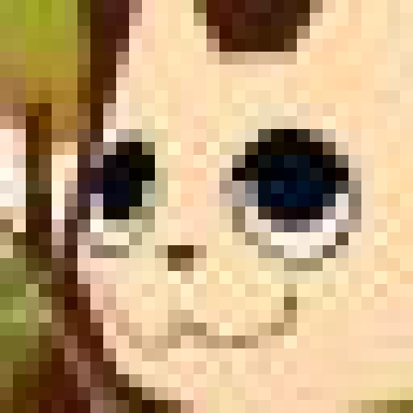
Webfishing
October 27th
Webfishing, like Windowkill, is also a platonic ideal of a video game. It has everything you could ever want, including, but not limited to:
- Great character Customization
- A good and consistent visual asthetic
- Gay Furries
- Multiplayer that's designed to be just hanging out chill style
- Easter Eggs that feed back into the multiplayer, showing new people around is a great experience
- also Gay Furries
Dome Keeper
December 22nd
It took hearing an twitch chatter critisize a streamer about unoptimal strip mining techniques for me to pick this game up. I hadn't heard much about it before and I wasn't even watching the live stream the comment came from, but for some reason that piqued my interest enough to pick the game up. I've only had the game for 7 days and I have somehow amassed 16 hours of playtime. Oops.
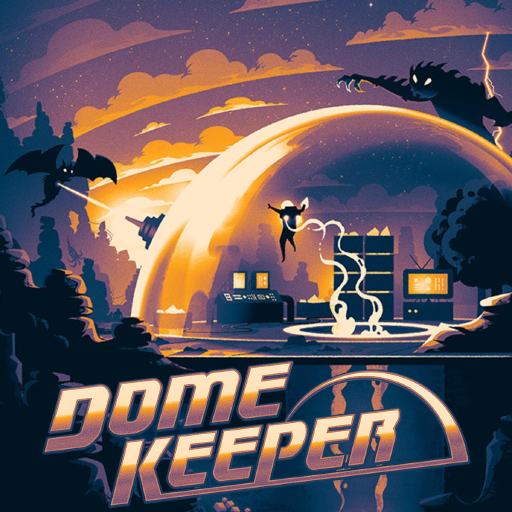
Honourable Mentions
Paper Mario: The Thousand Year Door (2024), Into The Breach, World of Goo 2, Outer Wilds, Dome Keeper
2025
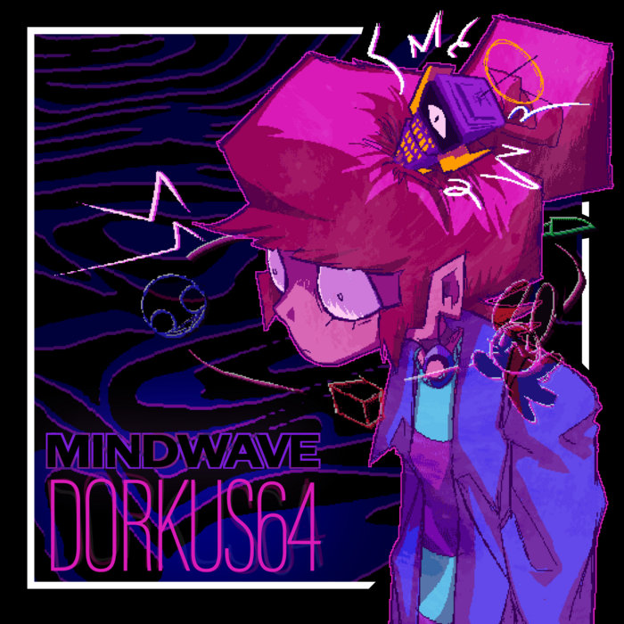
Mindwave [Demo]
17/01/2025
This video game was constructed in a lab specifically to appeal to me. The microgame style gameplay is amazing, and the art and visual design is mind-blowingly good. The demo only contains one and a half ish levels, and after I beat it I immediately went to the kickstarter and backed it, then immediately after that, went to bandcamp to buy the demo soundtrack. I cannot wait for this game to fully release.
OFF
Late January
I beat OFF for the first time just now! It's... an interesting experience. Hard to put into words. It's easy to see how this was a foundational game for future indie game creators, and I think I prefer later takes on the some of the ideas present (e.g. Oneshot), but the presentation and audo style undeniably stand out to this day.
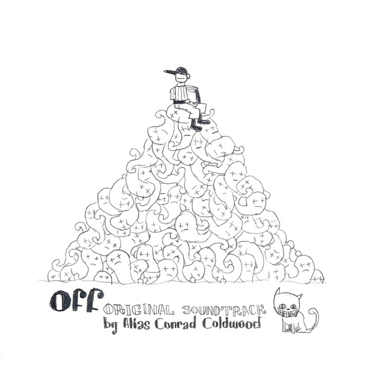
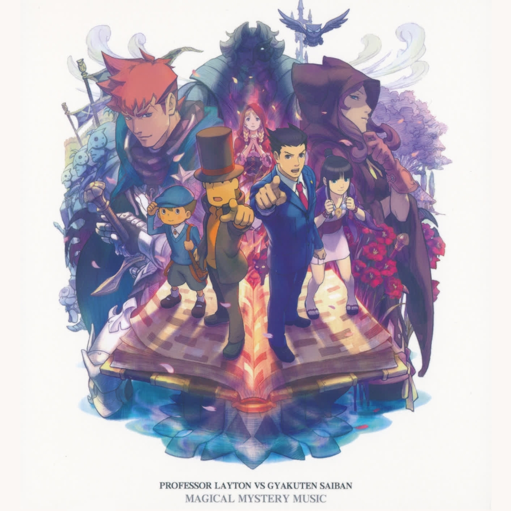
Professor Layton Vs Phoenix Wright Ace Attorney
16/02/2025
Playing this game felt like a fitting conclusion to playing both full series. It excecutes the crossover elements and blends the two gameplay styles together while having a story that is nonsense enough to fit both series. Though at times it felt a little like Phoenix and Maya stumbled into a Layton game, I feel each character is given enough time to shine that it works.And it's topped with some of the better visuals and atmosphere we've seen from both series.
Sonic the Hedgehog 1, 2, 3 and Sonic CD
Late February
I've always wanted to give the sonic games a try, since I love listening to their soundtracks as an outsider so much. I had a great time with these early titles! You can tell it takes a game or two for the team to really find their footing, but once you get to games like CD and 3, it gets much better in both gameplay and OST. I was surprised to learn that the Sonic CD OST I have enjoyed for so long was only in the original Japanese version, so I'm interested to hear what the US songs sounded like.
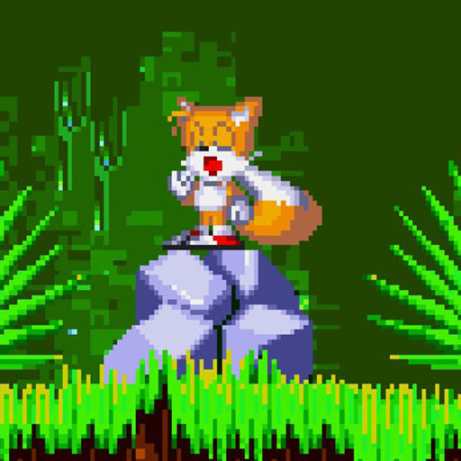
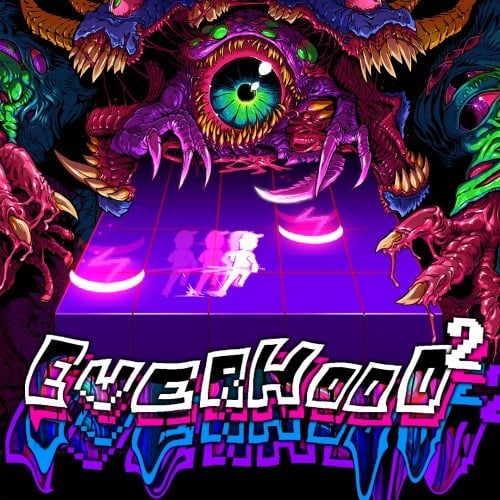
Everhood 2
06/03/2025
I am still shocked that this game exists. And after playing it, I'm still not sure quite why it was made. While it certinatley has highs, I wouldn't say it quite captured the magic of the first game, both in soundtrack and, especially, in story.
Donkey Kong Country: Returns
14/04/25
Mostly picked up this game (and it's sequel) to scour it for good new music. I've had a playlist of songs from this game and DKC:TF, and wanted to see if there was any more good music there. Turns out I was right, and there wasn't much better here than Cog Jog. But I had decent fun with the game!
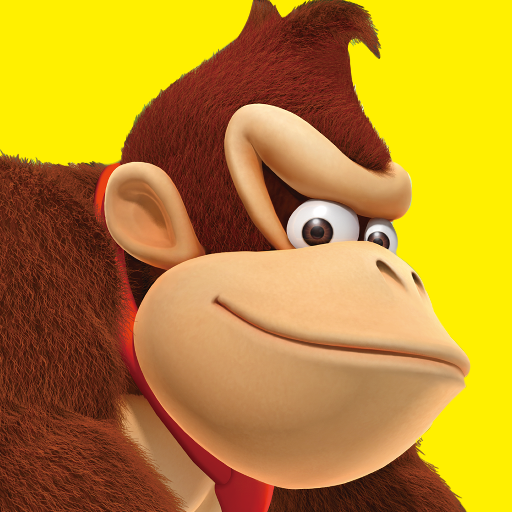
Honourable Mentions
Deep Rock Galactic (again), Balatro (again)